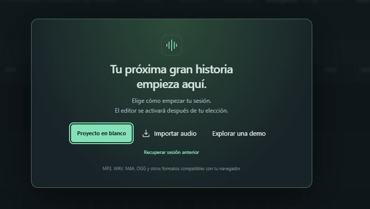
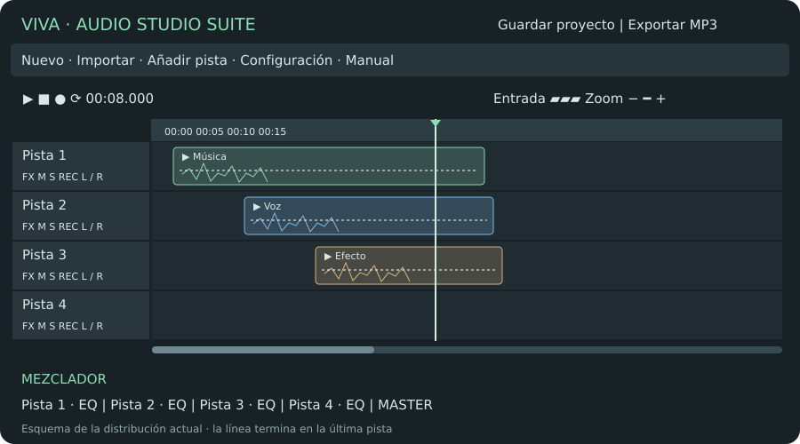
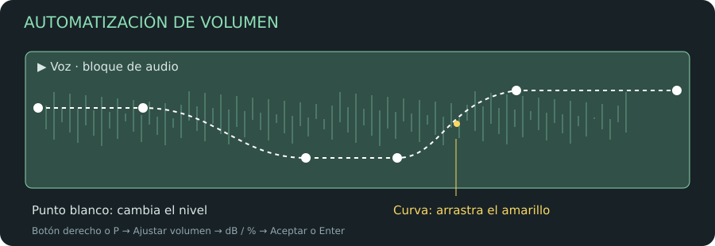
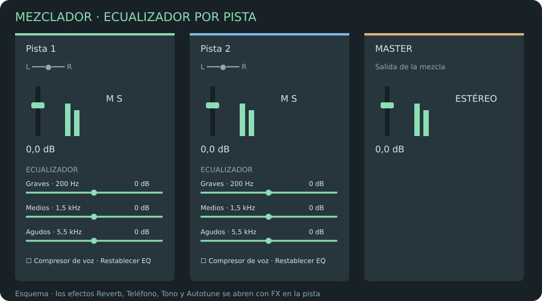
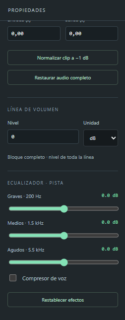

De la primera toma a una mezcla terminada. Edición, grabación y mezcla multipista en tu navegador.
Empieza por el recorrido rápido y utiliza el índice o el buscador para resolver una tarea concreta. Las capturas facilitadas muestran controles de versiones anteriores; sus pies explican dónde se encuentran ahora. Los esquemas describen la distribución y las herramientas actuales.
01 · Tu primera sesión
Al entrar, el editor permanece desactivado hasta elegir cómo comenzar. El micrófono está cerrado y ninguna pista tiene REC activo. Un proyecto nuevo empieza con Pista 1, Pista 2, Pista 3 y Pista 4, vacías y sin efectos.
Elección
Qué ocurre
Proyecto en blanco
Activa el editor para importar, añadir pistas o grabar.
Importar audio
Abre el selector de archivos. El editor se activa cuando la importación tiene éxito; cancelar conserva la pantalla inicial.
Explorar una demo
Carga sonidos de ejemplo para aprender. Puedes sustituirlos por tus audios.
Recuperar sesión anterior
Aparece si existe un autoguardado en este navegador y esta dirección web. Recupera audios, notas y ajustes.

Captura de referencia de la pantalla de inicio. En la versión actual aparece el logo VIVA AUDIO STUDIO SUITE EDITOR; la recuperación se ofrece cuando hay una sesión guardada.
Recorrido rápido: una voz con música
Elige Proyecto en blanco y pon un nombre a la sesión arriba.
Importa una base musical en Pista 1. Renómbrala como Música.
Abre Configuración, elige la entrada y comprueba la señal con Probar micro.
Activa REC en Pista 2, coloca el cursor y pulsa el botón rojo para grabar la voz. Vuelve a pulsarlo para terminar.
Recorta las tomas, añade puntos de volumen para bajar la música bajo la voz y ajusta el mezclador.
Descarga una copia con Guardar proyecto. Exporta la mezcla a MP3 o WAV.
Nuevo proyecto crea otra sesión vacía con cuatro pistas. Antes de sustituir una sesión con contenido, el editor permite guardar una copia. Abrir un proyecto anterior conserva su número de pistas.
02 · Conocer el espacio de trabajo

Esquema de la distribución actual. El editor ocupa el ancho disponible; el panel lateral de propiedades se ha eliminado.
Cabecera: nombre del proyecto, Abrir, Guardar proyecto y Exportar. El logo abre la página de inicio de VIVA AUDIO STUDIO SUITE EDITOR.
Herramientas: Nuevo proyecto, Importar audio, Añadir pista, Configuración y Manual; también Deshacer, Rehacer y demo.
Transporte: inicio, detener, reproducir/pausar, grabar, bucle, tiempo del cursor, medidor de entrada y zoom.
Regla: minutos y segundos, regiones y banderitas de anotación.
Pistas: controles fijos a la izquierda y bloques de audio a la derecha. La línea vertical indica el instante del cursor.
Mezclador: un canal por pista con volumen, panorama, M/S, ecualizador y compresor; MASTER controla la salida completa.
La barra de desplazamiento horizontal empieza en la zona de audio, después de los controles de las pistas. La línea de reproducción termina en la última pista y no se prolonga por el espacio vacío inferior.
03 · Importar y organizar fuentes
Pulsa Importar audio o arrastra archivos desde tu equipo al editor. Puedes seleccionar varios archivos. Al soltarlos sobre una pista, se colocan en ella y en la posición temporal de destino. El botón Importar coloca el audio a partir del cursor según la pista activa.
MP3, WAV, M4A, OGG, FLAC, AAC, AIFF y WebM dependen de los formatos que pueda descodificar tu navegador. Un archivo protegido o un códec no compatible puede fallar aunque su extensión sea conocida.
Durante la lectura verás una barra de progreso. La descodificación puede mostrar actividad sin un porcentaje exacto. Espera a que termine antes de repetir la importación. Los audios originales se conservan como fuentes: los recortes, puntos y efectos se aplican a los bloques del proyecto.
Un bloque o clip representa una parte de una fuente de audio. Puedes usar la misma fuente en varios bloques sin volver a importarla.
04 · Entrada, salida y configuración
Abre Configuración junto a Añadir pista. Los cambios se aplican al seleccionar cada opción. Abrir la ventana enumera dispositivos y no enciende por sí solo el micrófono.
Control
Uso
Entrada
Selecciona el micrófono o interfaz. Entrada del sistema sigue la elección del sistema operativo.
Detectar
Solicita el permiso necesario y actualiza los dispositivos y sus nombres.
Probar micro
Abre la entrada para comprobar el medidor sin guardar una toma. Vuelve a pulsarlo para detener la prueba.
Salida / Permitir salida
Elige altavoces, auriculares o interfaz cuando el navegador permita seleccionar la salida. Si no ofrece esta función, usa la salida del sistema.
Altura general
Ajusta todas las pistas entre 60 y 260 px.
OK / cerrar
Cierra la ventana y detiene la prueba independiente. Una entrada asociada a una pista con REC sigue activa.
Los nombres completos de dispositivos pueden aparecer después de conceder permiso. Las preferencias de entrada y salida se recuerdan localmente. Si desconectas un dispositivo, comprueba la selección; la salida puede volver a la del sistema.
En el hosting utiliza HTTPS. Si el editor está dentro de un iframe, la página que lo contiene debe permitir el micrófono. Los permisos y las entradas silenciadas por el sistema se gestionan también fuera del editor.
05 · Grabar con el micrófono
Abre Configuración y comprueba Entrada con Probar micro.
Activa REC en la pista de destino. Aparece un vúmetro junto a FX/M/S/REC que muestra la entrada en tiempo real. Solo una pista se prepara para grabar a la vez.
Coloca la línea vertical donde quieras iniciar la toma.
Pulsa el botón rojo del transporte o R. REC prepara la pista; el botón rojo inicia la grabación.
Mientras grabas, el bloque crece y dibuja la onda del sonido que entra. Puedes crear banderitas con B.
Pulsa de nuevo el botón rojo o R; Detener también finaliza la toma. Espera a que se prepare el bloque para editarlo.
Desactiva REC cuando ya no necesites la entrada.
El vúmetro de entrada mide el micrófono original. Los efectos de pista, M y S no sustituyen ni silencian la captura del micrófono. Los efectos se escuchan al reproducir la toma y al exportar; el editor conserva la grabación original.
Usa auriculares para grabar sobre una base y evitar que los altavoces vuelvan a entrar por el micrófono. La aplicación no activa una escucha directa de la entrada. Si falla la conversión final, se ofrece una copia de la toma original para conservarla.
Antes de una toma larga, graba unos segundos, reprodúcelos y confirma que la voz llega con claridad. Si la entrada satura, baja la ganancia física o del sistema: bajar el fader después no recupera el sonido ya distorsionado.
06 · Reproducir, situar el cursor y hacer zoom
Espacio reproduce o pausa. Detener termina la escucha. Inicio vuelve a 00:00. Haz clic en la regla o en un espacio vacío de una pista para situar el cursor. El indicador de tiempo permite escribir una posición en segundos.
Arrastra sobre la regla para seleccionar una región y activa el botón de bucle para repetirla. Esa región también puede exportarse por separado. Escape quita la región.
Con el puntero sobre las ondas o la regla, gira la rueda hacia arriba para acercar y hacia abajo para alejar. Se mantiene el instante que está bajo el puntero dentro de los límites de desplazamiento. El zoom no cambia el tiempo del cursor. Mayús y la rueda desplazan la vista; Ctrl/Cmd y la rueda conservan el zoom del navegador. También tienes −, +, el deslizador y Ajustar para ver la sesión.
Cada bloque lleva un pequeño play en su cabecera. Lo escucha de principio a fin de forma aislada, con sus recortes, automatización y efectos. Pulsarlo otra vez detiene la escucha; el de otro bloque cambia de audio. Los botones M/S y la selección no se modifican.
Abrir el menú con el botón derecho no detiene la reproducción. Puedes consultar opciones o ajustar volumen mientras escuchas.
07 · Pistas, colores, orden y tamaño
Añadir pista crea otra pista. Escribe su nombre en la cabecera. Pulsa el cuadrado de color para elegirlo: los bloques de esa pista y su canal del mezclador adoptan ese color. Los bloques que se mueven a otra pista adoptan el color del destino.
Las flechas ↑ y ↓ junto al nombre suben o bajan una posición. También puedes arrastrar el asa de puntos y soltar encima o debajo de otra pista. Con el asa enfocada, Alt+↑ y Alt+↓ cambian el orden. El mezclador sigue ese mismo orden y conserva los ajustes.
Arrastra el borde inferior de una pista para hacerla más fina o más gruesa; con el tirador enfocado sirven las flechas arriba/abajo. Configuración → Altura general ajusta todas. En las pistas muy finas, desplaza su zona de controles para llegar a la ganancia y el balance.
M silencia una pista: bloques grises y onda en gris claro. El botón S activa un solo exclusivo: la pista activa conserva su color y las demás quedan grises con la onda en blanco pálido. Al salir de Solo recuperan su color, salvo las que continúen silenciadas.
El botón S de la pista significa Solo; la tecla S del teclado divide un bloque. El color gris es un estado de escucha y no borra el color elegido.
08 · Seleccionar y mover varios bloques
Haz clic en los bloques que quieras seleccionar: quedan resaltados. Puedes seleccionar audios de pistas diferentes sin mantener Ctrl. Un clic en un espacio vacío limpia la selección.
Arrastra uno por su cabecera o por una zona de la onda fuera de la línea de volumen. Todos los seleccionados se mueven juntos y mantienen sus distancias temporales. Un movimiento vertical conserva la separación entre sus pistas; el grupo se limita al inicio de la sesión y a la primera/última pista.
El ajuste temporal ayuda a colocar los bloques en pasos de 0,1 s, 1 s o 0,01 s. Desactiva Ajuste para un posicionamiento libre. Para detalles finos, aumenta el zoom antes de mover.
El resaltado muestra qué audios se moverán. Si solo quieres uno, limpia primero la selección. Deshacer recupera el movimiento completo en una operación.
09 · Recortar, dividir, unir y fundir
Recortar: arrastra el extremo izquierdo o derecho del bloque. La onda, los puntos y la duración cambian mientras mantienes pulsado el ratón. El audio recortado sigue en la fuente original.
Dividir: sitúa el cursor dentro del bloque seleccionado y pulsa S, o utiliza Dividir. La herramienta Cortar divide al hacer clic. Si hay un segmento seleccionado, Dividir lo separa para editarlo.
Unir: selecciona exactamente dos bloques de la misma pista y pulsa W. No requiere Ctrl. Conserva el orden temporal, los recortes y los cambios de volumen; un hueco entre los bloques se convierte en silencio. No se unen bloques de pistas distintas. Deshacer restaura los originales.
Fundidos y valores exactos: haz clic derecho sobre el audio → Ajustes del bloque. Allí puedes cambiar nombre, inicio, duración, ganancia, fundido de entrada y fundido de salida, además del nivel de la línea de volumen. Los cambios se aplican al editar el campo. El ecualizador está en el mezclador.
Normalizar clip a −1 dB ajusta su ganancia según el pico de la fuente recortada. No analiza la sonoridad LUFS ni garantiza el pico final después de sumar pistas o efectos. Restaurar audio completo recupera la extensión de la fuente, modificando el inicio si el bloque estaba recortado por la izquierda.
Usa fundidos cortos para entradas y salidas suaves; escucha cada corte a volumen moderado y comprueba después la unión dentro de la mezcla.
10 · Fragmentos y portapapeles
Con el botón derecho puedes añadir marcadores de corte y seleccionar el tramo entre ellos. También puedes usar Marcar inicio del segmento y Marcar final del segmento. Estos puntos delimitan una edición dentro de un bloque y son distintos de los puntos de volumen.
Operación
Resultado
Escuchar segmento
Reproduce solo el fragmento seleccionado.
Separar segmento para editar
Crea un bloque independiente; el resto conserva su posición.
Conservar solo el segmento
Recorta el bloque a ese tramo.
Copiar / Cortar
Copia el fragmento si hay uno seleccionado; en otro caso copia el bloque. Cortar elimina además ese audio del destino original.
Pegar audio aquí
Inserta el contenido en la pista y posición elegidas con el botón derecho.
Duplicar / Silenciar / Eliminar segmento
Aplica la operación al tramo seleccionado.
Exportar segmento
Abre la descarga de ese fragmento en MP3 o WAV.
Ctrl/Cmd+C, X y V copian, cortan y pegan. El atajo de pegar usa la pista activa y el tiempo del cursor. El portapapeles es interno del editor; no es un archivo de audio en el portapapeles del sistema. Duplicar se activa también con Ctrl/Cmd+D. Supr elimina el bloque activo o el segmento seleccionado.
Las operaciones de grupo para mover y unir no convierten automáticamente Copiar o Supr en una operación sobre todos los bloques resaltados: confirma el bloque activo o el fragmento antes de editar.
11 · Volumen sobre la onda: puntos, dB y %

Esquema de automatización: los puntos blancos fijan niveles; el amarillo modifica la transición entre ellos.
Cada bloque comienza con una línea blanca punteada en el centro y dos puntos, al principio y al final. Ese nivel equivale a 0 dB / 100 %. Arrastra la línea hacia arriba o abajo para cambiar todo su volumen. Arrastra un punto para ajustar la envolvente en ese lugar. Al pasar el puntero, el punto se resalta.
Para crear uno, usa el botón derecho → Añadir punto de volumen. También puedes colocar el puntero sobre el bloque y pulsar P: se crea el punto en esa posición y se abre Ajustar volumen. Si ya hay uno ahí, se selecciona en lugar de duplicarlo. Cancelar conserva el punto creado con su nivel previo.
En Ajustar volumen elige Fijar, Aumentar o Reducir, escribe cualquier cantidad válida y selecciona dB o %. Sobre un punto se modifica ese punto; fuera de un punto se actúa sobre todo el bloque. Aceptar y Enter confirman lo mismo. Cancelar conserva el nivel anterior. El nivel también se puede escribir en Ajustes del bloque.
Ejemplo
Significado
Fijar 100 % / 0 dB
Nivel original de la línea.
Fijar 50 %
Aproximadamente −6,02 dB.
Fijar 200 %
Aproximadamente +6,02 dB.
Aumentar 25 %
Multiplica el nivel actual por 1,25.
Reducir 25 %
Multiplica el nivel actual por 0,75.
Aumentar / reducir 3 dB
Suma / resta 3 dB al nivel actual.
Fijar 0 %
Silencio.
Al pasar el puntero entre dos puntos aparece un pequeño punto amarillo. Arrástralo verticalmente para suavizar o pronunciar la curva sin cambiar los extremos. Doble clic vuelve a una recta; con el punto enfocado, las flechas cambian la curva. Si los niveles de ambos extremos son iguales, la línea permanece plana.
La automatización se escucha durante el arrastre y se conserva al recortar, dividir, copiar, guardar y exportar. P no actúa durante la escritura, con un diálogo abierto ni durante una grabación o carga.
La automatización del bloque se combina con su ganancia, el fader de pista y MASTER. Un valor muy alto puede saturar al mezclar; escucha y comprueba la salida.
12 · Banderitas y anotaciones
Haz clic derecho en la regla de minutos y segundos para crear una banderita blanca. Su ventana muestra el minuto, segundo y milisegundo del marcador y permite escribir una nota. Haz clic en una bandera existente para leerla, cambiar el texto o eliminarla.
Pulsa B para marcar el instante exacto de la línea vertical. Funciona con el sonido detenido, en pausa, reproduciéndose o grabándose. No redondea a la rejilla ni abre automáticamente la ventana: puedes seguir marcando y escribir después.
Las notas se conservan al editarlas/cerrar y se incluyen en el autoguardado y en el archivo .vivastudio. B no genera marcas mientras escribes, con Ctrl/Cmd/Alt, con otro diálogo abierto o manteniendo la tecla pulsada.
Ejemplos de nota: «Repetir esta frase», «Entrada de música», «Eliminar respiración», «Revisar esta toma con el cliente». Las banderas de sesión no cortan el audio.
13 · Mezclador, balance, ecualizador y compresor

Esquema del mezclador actual: los ajustes de EQ y el compresor están en cada canal de pista.
El fader de cada canal ajusta el volumen entre −60 y +6 dB; el extremo inferior silencia la señal. Está sincronizado con la ganancia de la pista. El panorama/balance L/R desplaza el sonido a izquierda o derecha; el centro mantiene el equilibrio. El balance también aparece debajo de la ganancia en la cabecera de pista.
Banda
Centro
Qué ajusta
Graves
200 Hz
Peso y cuerpo mediante un filtro de estantería.
Medios
1,5 kHz
Presencia mediante una banda de realce o reducción.
Agudos
5,5 kHz
Brillo mediante un filtro de estantería.
Cada banda permite −12 a +12 dB en pasos de 0,5 dB. Arrastra el deslizador del canal de la pista que quieras: funciona aunque otra pista esté seleccionada. Los ajustes se escuchan en reproducción y se incluyen en la exportación.
Compresor de voz activa un compresor con parámetros fijos para reducir diferencias de nivel. Restablecer EQ pone las tres bandas a 0 y desactiva el compresor; conserva los cuatro efectos de la ventana FX. Los cambios permiten Deshacer/Rehacer y se guardan con la sesión.
MASTER ajusta el volumen final de todas las pistas. Su canal no lleva ecualizador de pista. Contraer oculta el mezclador; Expandir lo recupera. La barra horizontal del mezclador da acceso a canales fuera de la pantalla.
Comienza reduciendo frecuencias molestas con cambios pequeños y compara al mismo volumen. El editor no incorpora medición LUFS ni de pico verdadero: sus medidores orientan el nivel, pero no certifican requisitos de emisión.
14 · Aplicar y combinar efectos
Pulsa FX, a la izquierda de M, en la pista. Si la mezcla ya se reproduce, continúa escuchándola. También puedes usar Reproducir / Pausar dentro de la ventana para comenzar o detener la escucha sin cerrarla. Los efectos actúan en esta pista dentro de la escucha actual; abrir FX mientras escuchas un bloque mantiene esa escucha aislada.
Activa un efecto y mueve sus controles: el resultado se escucha al ajustar, antes de pulsar OK. La reverb y el teléfono se actualizan en sus rutas de audio. El tono y el Autotune se procesan de forma continua cuando el navegador permite AudioWorklet, con un pequeño retardo de procesamiento; el editor compensa la programación para mantener la posición temporal de la pista.
Si AudioWorklet no está disponible o el hosting bloquea su carga, el tono y el Autotune se preparan en segundo plano después de una breve pausa del movimiento del control. Mientras tanto se mantiene la escucha del ajuste anterior. El estado de la ventana informa de la actualización; esta alternativa puede tardar más con audios largos.
Comparar sin FX permite escuchar temporalmente sin los cuatro efectos; vuelve a pulsarlo para recuperar el borrador. Conserva el volumen, balance, EQ y compresor de la pista. No cambia los ajustes guardados. Si la pista está silenciada por M/S, revisa esos controles antes de abrir la ventana.
OK o Enter guardan el ajuste elegido en una operación que puedes deshacer. Cancelar, Escape o cerrar recuperan el sonido y los valores anteriores. Restablecer permite probar los cuatro efectos desactivados; confirma con OK para guardar ese cambio o cancela para recuperar lo anterior. Un borrador no se incluye en el autoguardado ni en una exportación hasta confirmarlo.
El botón FX morado claro con letras blancas indica que hay un efecto guardado en la pista. El borrador se escucha dentro de la ventana; OK actualiza también el indicador. Al desactivar todos los efectos y confirmar, el botón vuelve a su estado normal. FX ON del mezclador también puede reflejar ecualización o compresión.
Los efectos confirmados actúan sobre todos los bloques de la pista, tanto en la mezcla como en la escucha aislada y en la exportación. Se conservan con el proyecto. La ventana mantiene el cursor y las demás pistas en marcha mientras ajustas. La reproducción habitual y la exportación pueden preparar el tono y la afinación completos para obtener el archivo final.
Las fuentes y las tomas originales no se sobrescriben. Prueba los efectos con una frase corta antes de preparar una toma larga. Deshacer recupera la configuración aplicada anteriormente.
15 · Reverb y efecto Teléfono
Reverb
Parámetro
Rango
Uso
Intensidad
0–100 %
Cantidad de ambiente mezclada con la señal original.
Duración
0,2–6 s
Extensión de la reverberación.
Pre-retardo
0–150 ms
Separación antes de la reverberación.
Como punto de partida para una voz, prueba intensidad baja, una duración corta y un pre-retardo moderado. Escucha que las palabras sigan claras. La cola natural se añade al final de la escucha y de la exportación, también al exportar un bloque o región; no incluye bloques que estén fuera de esa selección.
Teléfono
Parámetro
Rango
Uso
Intensidad
0–100 %
Mezcla original/filtrada.
Corte de graves
100–1.500 Hz
Reduce el cuerpo grave.
Corte de agudos
1.500–6.000 Hz
Reduce el brillo.
Saturación
0–100 %
Añade distorsión al carácter de llamada.
Prueba 300 Hz de graves, 3.400 Hz de agudos e intensidad alta para un carácter telefónico marcado. El corte de graves debe quedar por debajo del corte de agudos. La saturación modifica el timbre; vuelve a ajustar el nivel de pista si lo necesitas.
16 · Cambio de tono y Autotune
Cambio de tono
Elige entre −24 y +24 semitonos, en pasos de 0,1. Un valor negativo crea una voz más grave y uno positivo una más aguda. Doce semitonos corresponden a una octava. La duración y el tamaño de los bloques se conservan. Valores extremos pueden producir un timbre artificial, útil como efecto creativo.
Autotune
Trabaja con una voz monofónica, una nota a la vez. Una mezcla con varias voces o instrumentos simultáneos dificulta la detección; usa una pista de voz separada.
Parámetro
Qué decide
Nota raíz
Tonalidad base, de Do a Si.
Escala
Cromática, mayor, menor, pentatónica mayor o pentatónica menor. Cromática permite los doce semitonos.
Intensidad · 0–100 %
Cantidad de corrección hacia la nota objetivo.
Velocidad · 0–500 ms
0 ms produce una corrección inmediata; aumenta el tiempo para transiciones más suaves.
Tolerancia · 0–100 cents
Margen de afinación antes de corregir. Cien cents equivalen a un semitono.
Nota más grave · 40–500 Hz
Límite inferior de detección de la voz.
Nota más aguda · 80–2.000 Hz
Límite superior. Debe ser mayor que el inferior.
Para una corrección discreta, parte de una escala correcta, velocidad moderada y una intensidad parcial; escucha el resultado. Para un efecto robótico, reduce la velocidad y aumenta la intensidad. Si corrige hacia notas equivocadas, revisa la tonalidad y el rango de voz antes de aumentar la corrección.
Se puede combinar con el cambio de tono y los otros efectos. En la ventana FX puedes ajustar la afinación mientras escuchas. Para la reproducción habitual y la exportación se conserva la duración; la preparación muestra su progreso y reutiliza el audio cuando los ajustes no cambian.
17 · Método de trabajo para una edición cuidada
Preparación: nombra pistas por función, revisa entrada/salida, graba una prueba y guarda una primera copia del proyecto.
Montaje: selecciona las mejores tomas, limpia silencios largos, usa cortes y fundidos suaves. Añade banderas a lo pendiente.
Equilibrio: trabaja primero con niveles y balance. Baja la música donde habla la voz con puntos de volumen y curvas.
Timbre: corrige con EQ del mezclador. Activa el compresor si ayuda a controlar la voz. Comprueba después el nivel general.
Ambiente y creatividad: aplica FX con una finalidad concreta. Compara la pista dentro de la mezcla y usa su play para revisar detalles.
Revisión: escucha toda la sesión, las entradas, los finales y la cola de reverb; confirma qué pistas están en M/S y qué región exportarás.
Entrega: guarda el .vivastudio y exporta el formato necesario. Escucha también el archivo descargado.
La normalización de pico no sustituye una mezcla equilibrada. Evita compensar una pista distorsionada aumentando MASTER o aplicar efectos a todas por costumbre. Si necesitas verificar una norma de sonoridad, analiza el archivo final con un medidor que ofrezca esa medida.
18 · Guardar, abrir y recuperar proyectos
Guardar proyecto descarga un archivo .vivastudio con todos los audios, posiciones, colores, alturas, volúmenes, curvas, notas y efectos. Abrir vuelve a cargar ese archivo para continuar. Los proyectos anteriores siguen siendo compatibles; al abrirlos, REC queda desactivado.
El autoguardado es local, mediante los datos de este navegador y esta dirección web. Recuperar sesión anterior aparece al volver si hay una copia disponible. No se comparte entre equipos, dominios ni navegadores; puede perderse si borras los datos del sitio o usas una sesión privada.
El MP3/WAV es una mezcla final, no un proyecto editable por pistas. Conserva el .vivastudio y una copia externa cuando termines una etapa importante.
19 · Exportar MP3 y WAV
Pulsa Exportar y elige el nombre.
Selecciona MP3 con 128, 192, 256 o 320 kbps, o WAV PCM de 16 bits. La salida es estéreo a 44,1 kHz.
Elige Sesión completa, Región de la mezcla, Clip seleccionado o Segmento del clip seleccionado. La selección requerida debe existir.
Decide si normalizas el pico a −1 dB. Esta opción ajusta el pico de la mezcla renderizada y no su sonoridad LUFS.
Pulsa Descargar audio. La barra muestra actividad durante la mezcla y porcentaje cuando se codifica el MP3. Espera la descarga o pulsa Cancelar para detener el proceso.
La exportación respeta el volumen, balance, ecualización, compresión, puntos, curvas, fundidos y efectos. En la mezcla completa/región se respeta M/S; las opciones de bloque o segmento preparan la escucha aislada correspondiente. Una reverb activa puede prolongar el archivo por su cola natural.
Uso
Elección práctica
Compartir una voz o una revisión ligera
MP3; ajusta calidad según tamaño y necesidad.
Compartir música con mayor calidad dentro de MP3
256 o 320 kbps; comprueba el archivo final.
Continuar un procesamiento o archivar sin compresión con pérdida
WAV.
Retomar pistas, anotaciones y efectos
Guardar proyecto .vivastudio, además del audio final.
20 · Atajos y gestos
Tecla / gesto
Acción
Espacio
Reproducir / pausar.
R
Iniciar / finalizar grabación.
S
Dividir el bloque activo en el cursor.
W
Unir exactamente dos bloques seleccionados de una misma pista.
P
Crear/seleccionar un punto de volumen bajo el puntero y abrir su ajuste.
B
Banderita en el tiempo del cursor, también detenido o grabando.
Inicio
Volver al comienzo.
Supr / Retroceso
Eliminar el bloque activo o segmento.
Ctrl/Cmd+Z
Deshacer.
Ctrl/Cmd+Mayús+Z / Ctrl/Cmd+Y
Rehacer.
Ctrl/Cmd+C / X / V
Copiar / cortar / pegar bloque o fragmento.
Ctrl/Cmd+D
Duplicar.
Ctrl/Cmd+S
Descargar el proyecto.
Escape
Cerrar menú/diálogo o quitar la región, según el contexto.
Enter en Ajustar volumen o FX
Confirmar los valores válidos.
Rueda sobre ondas/regla
Zoom. Mayús desplaza; Ctrl/Cmd conserva el zoom del navegador.
Botón derecho sobre audio / regla
Menú de edición / banderita con nota.
Alt+↑ / ↓ sobre el asa de una pista
Cambiar el orden.
Los atajos del editor se suspenden mientras escribes o hay un diálogo abierto. No actúan antes de elegir cómo comenzar. Algunas operaciones se desactivan mientras se carga, exporta o graba. En macOS, Cmd sustituye a Ctrl.
21 · Resolver problemas
Síntoma
Comprobación
Controles desactivados al entrar
Elige Proyecto en blanco, Importar, Demo o Recuperar.
El micrófono no entra
Configuración → Entrada → Probar micro. Permite el micrófono, selecciona la entrada correcta y comprueba volumen/silencio físicos y del sistema. En el hosting usa HTTPS.
REC encendido pero no se crea una toma
REC prepara la pista; inicia con el botón rojo o R.
Hay señal pero no se escucha la entrada en directo
El editor mide y graba, pero no activa escucha directa del micrófono. Reproduce una toma corta para comprobarla.
No se oye la reproducción
Revisa salida del sistema, permiso/selector de salida, MASTER, volumen de pista y M/S. Pulsa play para reactivar el audio del navegador.
Solo una pista conserva su color
Hay Solo activo; pulsa su S para desactivarlo.
W no une
Selecciona exactamente dos bloques de una misma pista; limpia otras selecciones haciendo clic en vacío.
P no añade un punto
Coloca el puntero sobre un bloque; cierra diálogos, sal de campos de escritura y termina cualquier carga/grabación.
La curva amarilla parece plana
Los extremos tienen el mismo nivel; cambia uno para apreciar la transición.
Un archivo no se importa
Comprueba que sea audio válido y compatible; conviértelo a WAV/MP3 con una herramienta compatible si es necesario.
El tono o Autotune tarda
La escucha directa requiere AudioWorklet disponible. Si está bloqueado, se prepara el ajuste en segundo plano sin detener las otras pistas. La reproducción habitual y la exportación también pueden preparar el audio; espera su progreso.
El PDF no se descarga
Usa Descargar PDF o Imprimir → Guardar como PDF. Permite las descargas del navegador.
No aparece la recuperación
Debe existir un autoguardado en el mismo navegador y dirección. Abre tu copia .vivastudio.
El hosting muestra una versión antigua
Reemplaza el paquete completo, vacía la caché y recarga.
Deshacer/Rehacer ayuda a recuperar ediciones; una copia .vivastudio protege ante cierre, borrado de datos o cambio de equipo. No dependas solo del autoguardado.
22 · Referencia visual y términos

Captura de referencia de los controles antes de retirar Propiedades. En la versión 1.14.0 el ecualizador y el compresor están en el mezclador; los fundidos, la ganancia y el nivel del bloque se abren desde Ajustes del bloque, con el botón derecho.
Término
Significado
Pista
Canal que agrupa bloques con un volumen, balance y procesamiento comunes.
Clip / bloque
Fragmento de una fuente colocado en la línea de tiempo.
Segmento
Selección dentro de un bloque para editar o exportar.
Automatización / envolvente
Línea de volumen con puntos y curvas a lo largo del audio.
dB
Unidad logarítmica para indicar cambios de nivel.
Panorama / balance
Distribución del sonido entre izquierda y derecha.
FX
Efectos aplicados a la pista.
Master
Salida y volumen final de la mezcla.
Pico / sonoridad
El pico es el máximo de amplitud; no equivale al volumen percibido medido en LUFS.
El editor procesa el audio en el navegador. La memoria disponible limita el tamaño de los proyectos. Este paquete incluye edición de audio y efectos propios; no incorpora MIDI, instrumentos virtuales VST, cuentas ni almacenamiento de proyectos en la nube.
Este manual se puede descargar completo como HTML o PDF y también imprimir. Las capturas de referencia son imágenes facilitadas por el usuario; los tres esquemas son ilustraciones de los controles actuales.